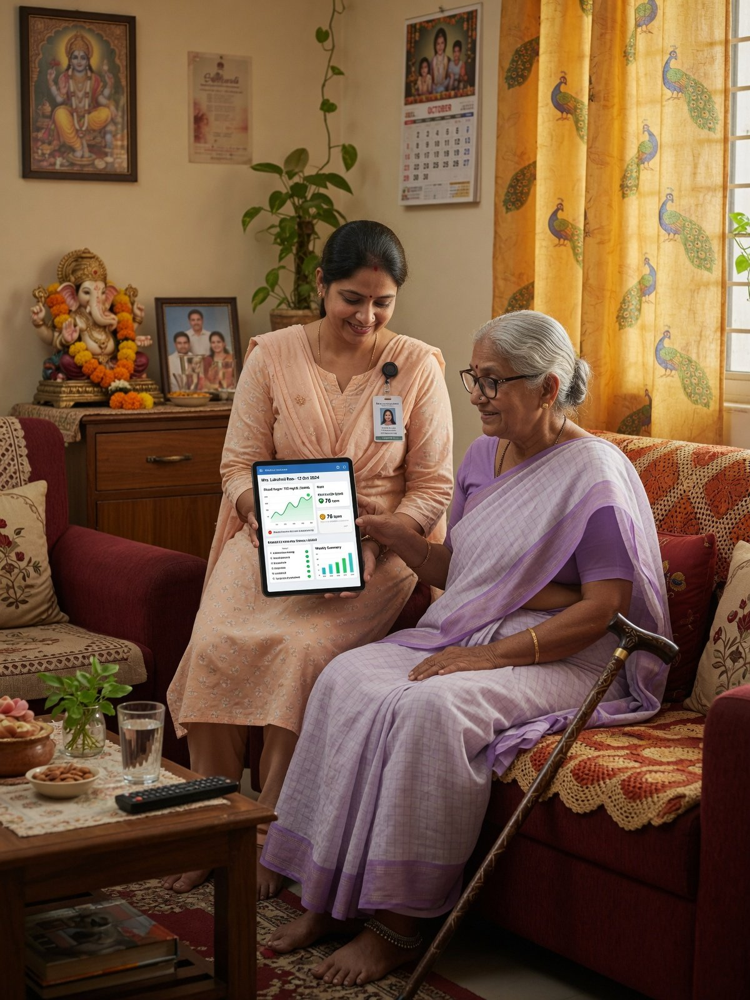
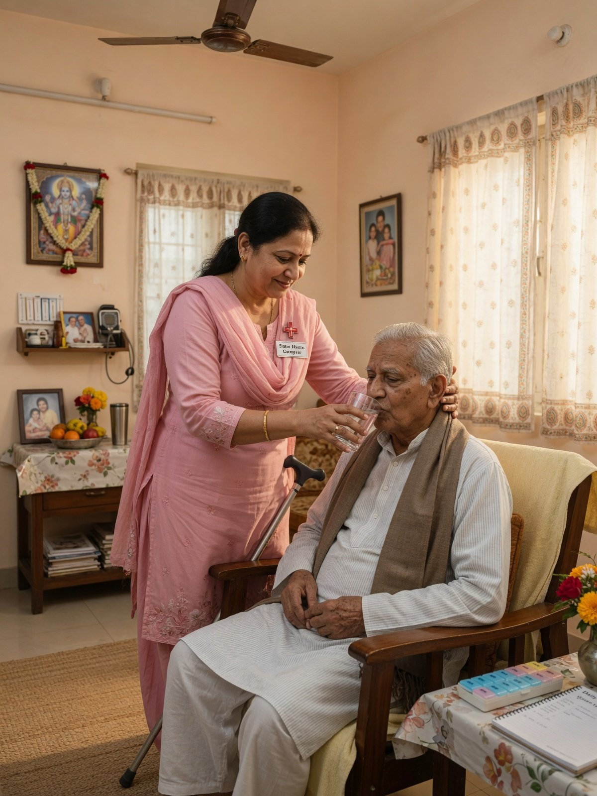
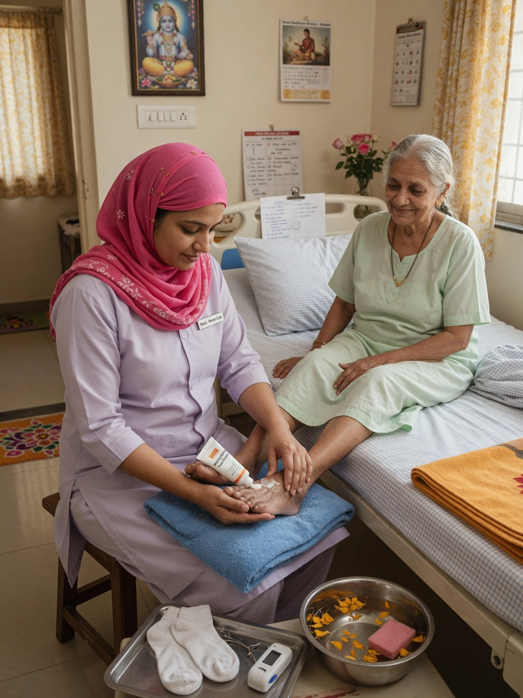
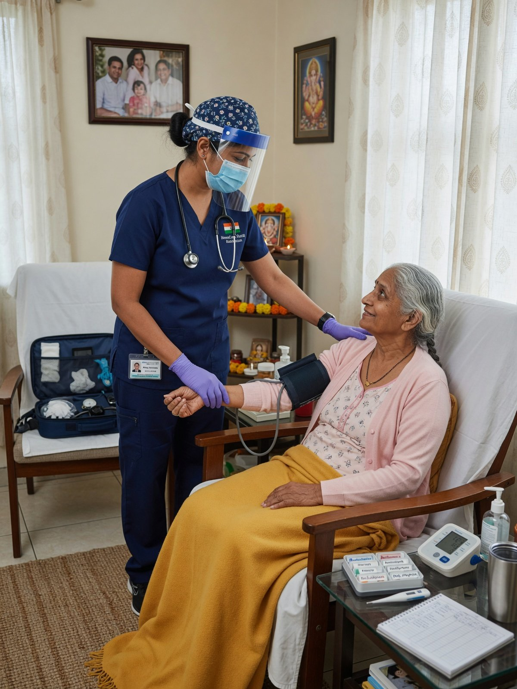
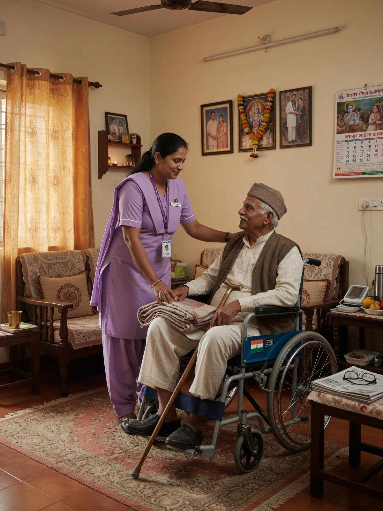
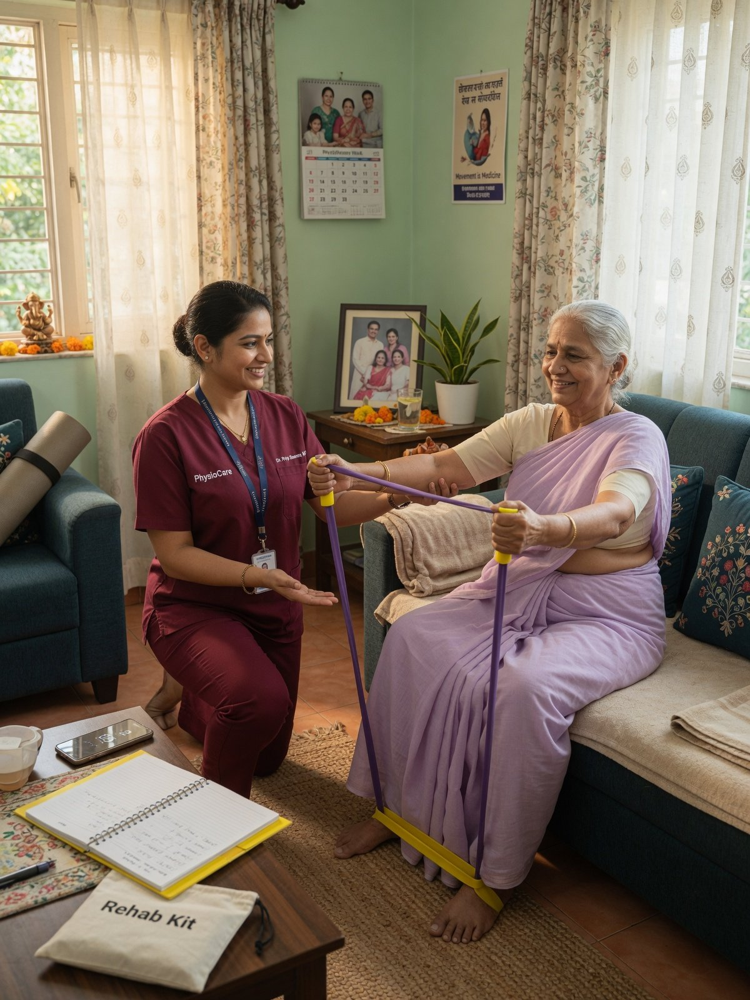
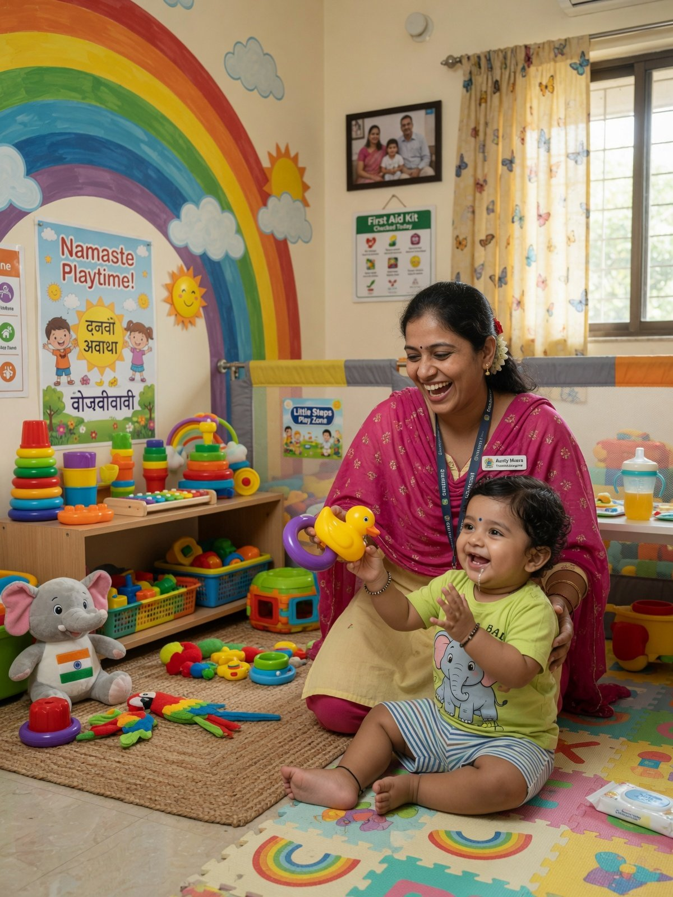
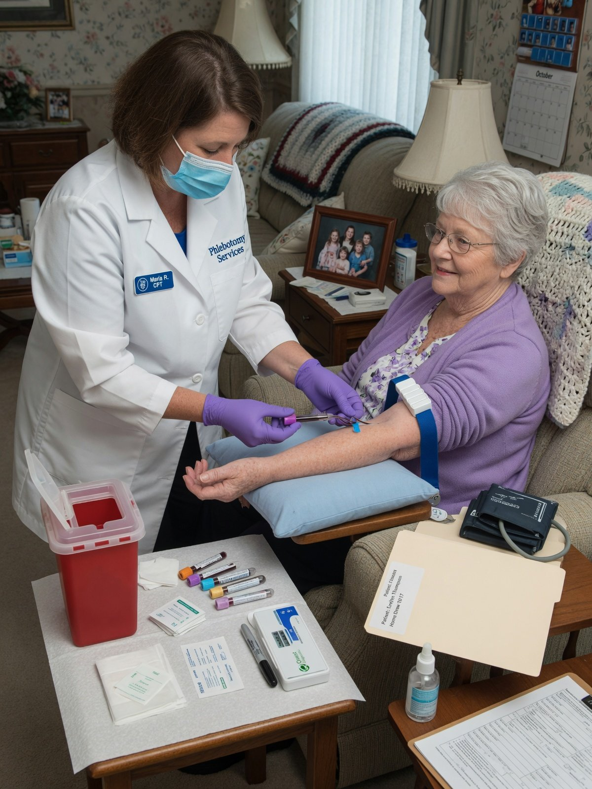
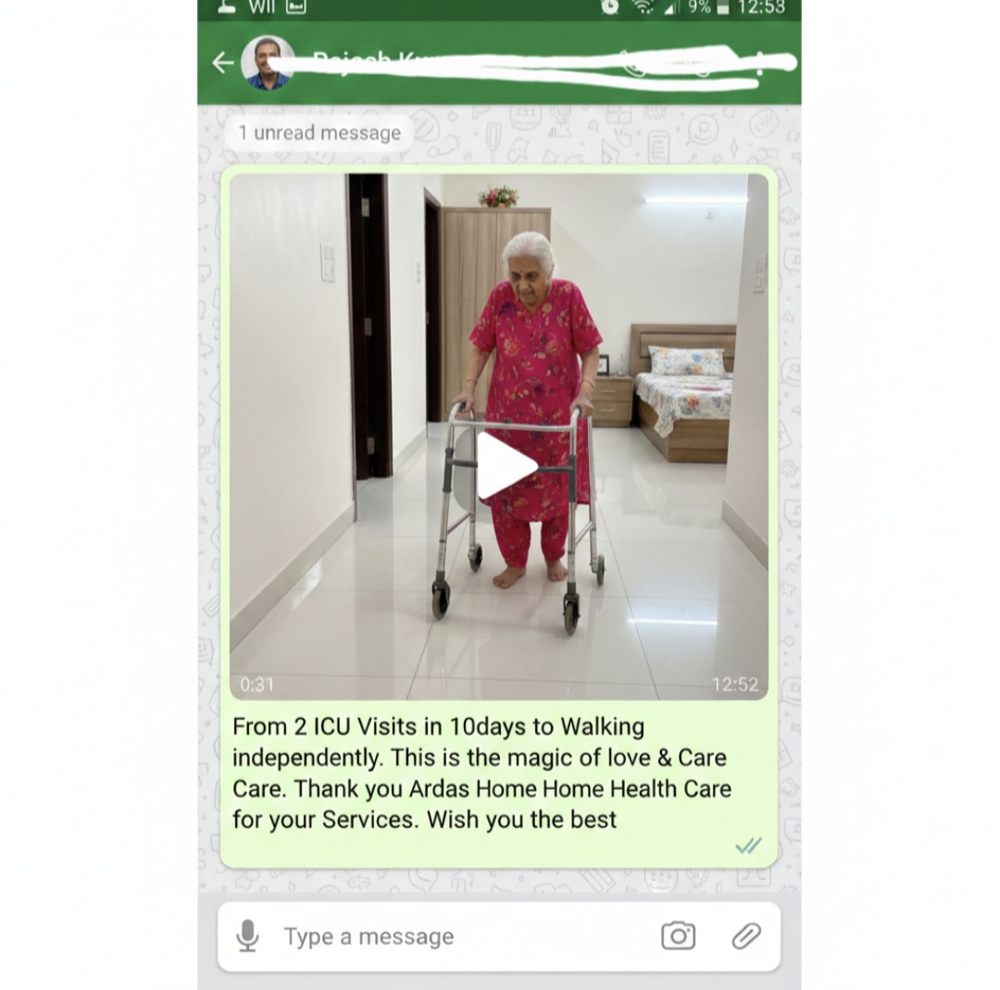
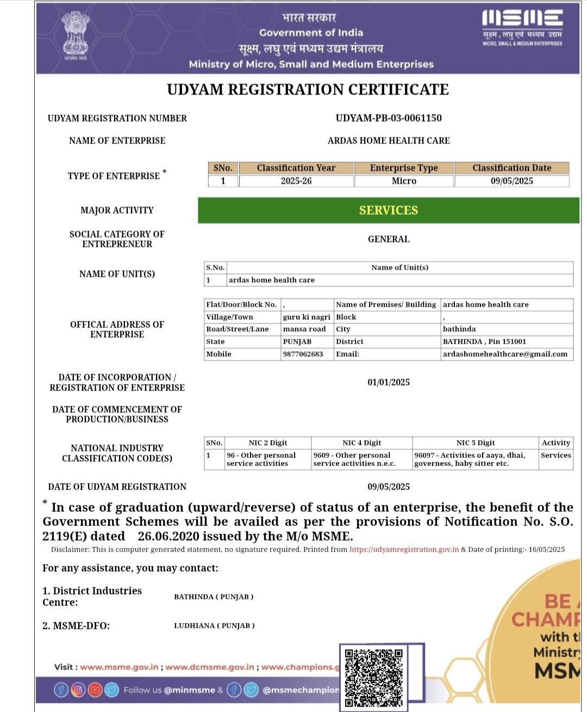

01
Elderly Care at Home
Reliable elderly care, companionship, daily living assistance, mobility support and routine health monitoring for ageing parents in Bathinda.
Elderly care in Bathinda →ARDAS Home Health Care provides verified caregivers, elderly care, home nursing, patient attendants, post-surgical care, physiotherapy, babysitter services and lab test facility at home in Bathinda. Get compassionate, professionally managed care at your door.

A background-verified caregiver can be assigned and briefed within one day of your call, subject to availability.
Home Healthcare Services in Bathinda
Our trained team supports daily care, recovery, nursing and essential at-home services in Bathinda, Punjab.

Reliable elderly care, companionship, daily living assistance, mobility support and routine health monitoring for ageing parents in Bathinda.
Elderly care in Bathinda →
Recovery support, wound-care assistance, mobility help and post-discharge monitoring after surgery or hospital treatment.
Post-surgical care in Bathinda →
Qualified nurses for injections, catheter and tube care, vitals tracking and other prescribed clinical procedures at home.
Home nursing services in Bathinda →
Trained day, night and 24-hour patient attendants for hygiene, meals, mobility, personal care and everyday assistance.
Patient attendant in Bathinda →
Convenient home physiotherapy and rehabilitation for post-surgical recovery, injuries, weakness and mobility limitations.
Physiotherapy at home in Bathinda →
Trusted, trained and background-verified babysitters for newborns, infants and toddlers, including feeding, hygiene, safety and play-based engagement at home.
Babysitter services in Bathinda →
Book lab tests and blood sample collection at home in Bathinda. A trained phlebotomist visits your door and digital reports are shared according to the test timeline.
Lab test at home in Bathinda →How It Works
Tell us what your family needs and our team will help coordinate the right service.
Share the patient’s condition, preferred schedule and location in Bathinda.
We match the requirement with an available caregiver, nurse, babysitter or home service professional.
Families receive updates and can contact the support team for assistance.
If the assigned professional is not suitable, contact us to discuss a replacement.
Reviews
4.8 ★★★★★ Based on 1,000+ reviews
“Outstanding experience — professional and filled with genuine compassion. Everything was managed smoothly.”
Samrdeep Singh · Jan 2025
“Exceptional from the very first interaction. High professionalism, empathy and dedication.”
Deepinder · Mar 2025
“A blessing for my family. The caregiver was kind, respectful and caring.”
Manisha Sharma · Apr 2025
Why ARDAS
ARDAS has 3+ years of experience in professionally managed home healthcare.
Identity and background checks, medical fitness screening, training and supervision.
Our team coordinates care directly instead of leaving families to manage multiple vendors.
Care services are coordinated for families and patients in Bathinda and nearby areas.
Clear communication helps families stay informed about ongoing care.
Call or WhatsApp us to enquire about elderly care, nursing, babysitter services or home lab tests.
Areas We Serve
We coordinate caregivers, nurses, patient attendants, physiotherapists, babysitters and home lab tests across Bathinda city and nearby towns.
Don't see your locality? Call us — if it is reachable from Bathinda, we will do our best to help.
Our Care Gallery
See examples of elderly care, nursing support, patient assistance and the trust families place in ARDAS Home Health Care.


Work With ARDAS
Are you a qualified nurse, elderly caregiver, patient attendant, babysitter, or physiotherapist? ARDAS connects verified healthcare staff with patients and families across Bathinda on rewarding duty shifts.
We have immediate duty openings for background-verified candidates:
Frequently Asked Questions
Yes. ARDAS provides elderly care, home nursing, patient attendants, post-surgical care, physiotherapy, babysitter services and lab test facility at home in Bathinda.
Most requirements are fulfilled within 24 hours. Urgent cases may be arranged within 4–6 hours, subject to availability.
Yes. We offer trained and background-verified babysitter services for newborns, infants and toddlers in Bathinda.
Yes. Contact ARDAS to enquire about home sample collection and available lab tests in Bathinda.
ARDAS states that caregivers undergo identity and background verification, medical fitness checks, training and ongoing supervision.
Pricing depends on the type of service (caregiver, nurse, attendant, physiotherapist or babysitter), the shift — day, night or 24-hour live-in — the patient's condition and the duration of service. ARDAS shares a clear, transparent quote before service begins. Call or WhatsApp +91 98770 62683 for current rates.
Yes. ARDAS offers day-shift, night-shift and 24-hour live-in caregivers, patient attendants and nurses, subject to availability.
We coordinate services across Bathinda city — including Model Town, Ajit Road, Mall Road, Civil Lines, Power House Road, Thermal Colony and Bibi Wala Road — and nearby towns such as Rampura Phul, Maur Mandi, Talwandi Sabo, Nathana, Sangat, Bhucho Mandi and Goniana.
A patient attendant helps with non-clinical daily care such as hygiene, feeding, mobility and companionship. A home nurse handles clinical procedures — injections, catheter and tube care, wound dressing and vitals monitoring — as prescribed by a doctor.
Yes. Many NRI families arrange elderly care through ARDAS. You can book by phone or WhatsApp, and we keep families updated about ongoing care.
Urgent requirements can often be arranged within 4 to 6 hours, subject to staff availability and care needs. Most assignments are fulfilled within 24 hours.
ARDAS accepts cash, UPI and bank transfer. Payment terms are shared clearly before the service starts.
Speak to ARDAS about a verified caregiver, nurse, babysitter or lab test facility at home.